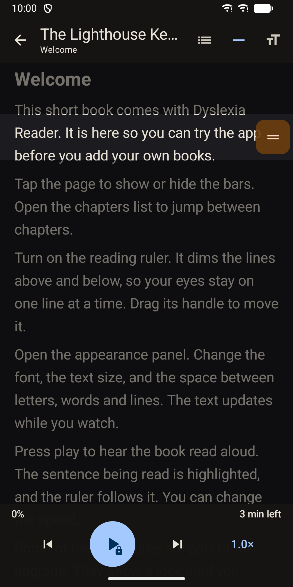

Dyslexia Reader: Leer libros
Lee libros con fuentes para dislexia, una regla de lectura y lectura en voz alta





Acerca de la app
Dyslexia Reader es un lector de libros pensado para personas con dislexia. Importa tus propios libros y ajusta el texto para que resulte cómodo a la vista. HERRAMIENTAS DE LECTURA - Regla de enfoque de línea: oscurece las líneas alrededor de la que lees para que no pierdas el sitio. - Fuentes pensadas para la dislexia: Lexend, OpenDyslexic y Atkinson Hyperlegible. - Controles de espaciado entre letras, palabras y líneas, y tamaño del texto. - Ajustes de lectura predefinidos para el color de fondo, el color del texto, la fuente y el espaciado. - Lectura en voz alta con la voz instalada en tu dispositivo. Se resalta la frase actual y puedes cambiar la velocidad. La lectura continúa con la pantalla apagada. - El modo claro y el oscuro siguen la configuración del sistema. TUS LIBROS - Importa archivos TXT, EPUB y PDF desde tu dispositivo. - Comparte texto sin formato desde otra aplicación para añadirlo a tu biblioteca. - Los PDF se convierten en texto, así que se aplican tu fuente y tu espaciado. No se conservan las imágenes ni el diseño de página. No se admiten PDF escaneados sin texto. - Incluye un libro de muestra corto para que pruebes todas las funciones antes de añadir los tuyos. - La biblioteca muestra el progreso y el tiempo restante de cada libro. Un widget para la pantalla de inicio muestra tu progreso y te lleva de vuelta a donde lo dejaste. ACCESIBLE - Botones grandes y etiquetas para lectores de pantalla. - Para teléfonos y tabletas. PRIVACIDAD - No hace falta ninguna cuenta. - Tus libros y ajustes se quedan en tu dispositivo. La aplicación no tiene permiso de internet, ni anuncios, ni analíticas. - En Ajustes puedes borrar un libro o todos los datos de la aplicación cuando quieras. - Una opción en Ajustes bloquea las capturas de pantalla. FUNCIONES GRATUITAS Y DE PAGO Gratuitas: importación de TXT y EPUB, texto compartido, la fuente Lexend, la regla de línea básica, los controles de espaciado y el widget. Se desbloquean con una compra a través de Google Play: todas las fuentes, lectura en voz alta con frase resaltada, ajustes de lectura predefinidos, una regla personalizable (altura, atenuación y tono) e importación de PDF. La compra se hace una sola vez, no requiere cuenta y se puede restaurar con la misma cuenta de Google. Las fuentes tienen licencia SIL Open Font License. Los detalles de las licencias están en Ajustes. Preguntas o comentarios: apps@schimpf.es